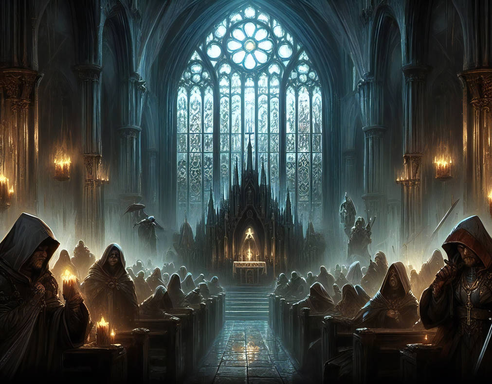

Lost and Found
Amidst a stormy maritime backdrop, a lighthouse keeper, a rugged tugboat captain, and a lost sailor named Richie converge in a tale of peril and redemption. As Cappie sets out on a daring rescue mission, the lighthouse keeper grapples with the prospect of retirement, finding unexpected solace and purpose amidst the crashing waves. This compact narrative explores themes of resilience, human connection, and the timeless allure of the sea.

Cell 3.47
In Stocken Gate prison, Paula Pritchard's contraband empire faces an unexpected challenge from an unlikely source: a community of rats led by Rita. Together, they craft a daring plan that reverberates through the prison, showcasing the power of unexpected alliances in the face of adversity.

Be Careful What You Wish For
In a race against time, Arthur Ratcliffe, a budding private detective, tracks down a missing manuscript stolen from Bristol University. With clever deduction and international pursuit, he not only retrieves the precious document but also secures his dream of establishing a detective agency, supported by the university.